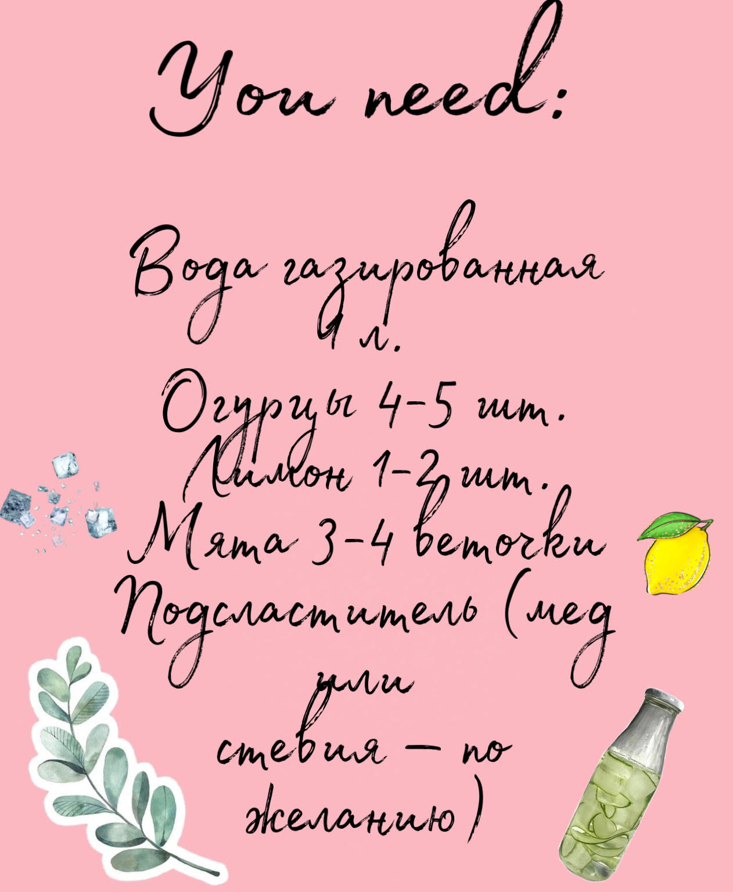
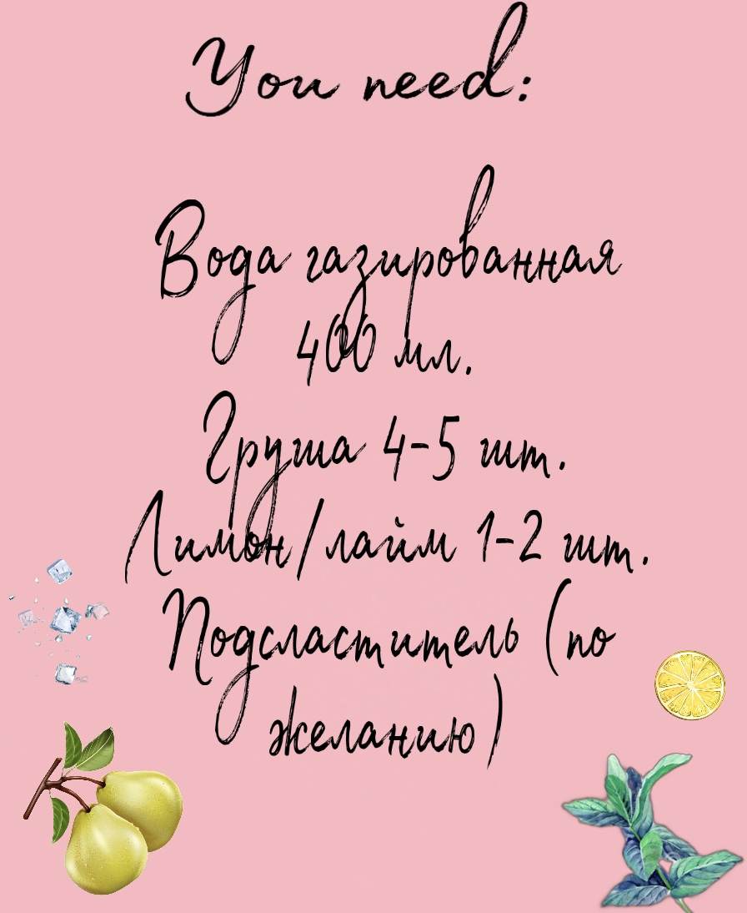

Напитки
В жаркую погоду хочется ярких, свежих и вкусных напитков. Сейчас я поделюсь рецептами, чтобы не было соблазна пить сладкую магазинную газировку, пакетизированный сок или сахарный компот.Переливай их в спортивную бутылочку и бери с собойна прогулки.Старайся не добавлять много сахара и подсластителей — более кислые напитки освежают и утоляют жажду намного эффективнее!

Огуречный splash
- Очищаем огурцы от кожуры и нарезаем их мелкими кусочками.
- Измельчаем в блендере огурец и мяту. Добавляем лимонный сок и подсластитель по желанию. Перемешиваем.
- Заливаем газированной водой и снова взбиваем в блендере.
- Процеживаем через сито, отжимаем мякоть.
- Перед подачей добавляем кубики льда.
Грушевый paradice
- Чистим грушу. Измельчаем ее в блендере до состояния пюре
- Кладем в бокалы ломтики лимона или лайма. Заполняем бокал льдом.
- Наливаем грушевое пюре так, чтобы оно заполнило 2/3 стакана. Сверху доливаем газированную воду.
- Перед подачей добавляем кубики льда и украшаем дольками лайма.
